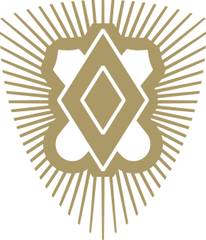

Southwestern University · Georgetown, Texas
Built on
brotherhood.
The Alpha Omicron Chapter of Pi Kappa Alpha—Texas PIKE’s mother chapter since 1910.

Chapter photographAdd a new approved photo hereUNITY THROUGH DIVERSITY ◆ SCHOLARS ◆ LEADERS ◆ ATHLETES ◆ GENTLEMEN ◆
01 / WHO WE ARE
More than a house.
A lifelong bond.
Alpha Omicron brings together men with different backgrounds and a shared commitment to becoming better students, leaders, teammates, friends, and citizens.
Our chapter’s local motto—Unity Through Diversity—has guided generations of Southwestern Pikes since 1969. It is a standard for how we learn from one another and contribute to the campus and Georgetown community.
02 / OUR STORY
THE MOTHER CHAPTER OF TEXAS
A legacy still
being written.
Seven local founders began Alpha Omicron in 1910. The chapter returned after World War II with renewed purpose and has continued adapting, leading, and building community at Southwestern.
Alpha Omicron begins
Seven founders establish the first Pi Kappa Alpha chapter in Texas at Southwestern University.
A chapter reborn
Alpha Omicron returns with a pledge class that included veterans of World War II and a renewed standard of excellence.
Unity Through Diversity
The chapter adopts the local motto that continues to define Alpha Omicron’s character.
The next generation
Southwestern Pikes carry the chapter forward through scholarship, leadership, athletics, service, and friendship.
The seven foundersView names +
- Glenn Dee Chapman
- Samuel Austin Grogan
- James Marvin McGuire
- Omer Ogden Mickle
- Claudius Mayo Singleton
- Adrian Lee Voight, first president
- Merle Thomas Waggoner
03 / THE PIKE EXPERIENCE
Four ways we
show up.
These aren’t labels. They are daily commitments—on campus, in the classroom, in competition, and in the way we treat others.
Scholars
Academic support, accountability, mentorship, and scholarships help brothers put their education first.
Leaders
Members build practical experience through chapter roles, campus organizations, and service to others.
Athletes
From varsity competition to intramurals, Pikes bring discipline, teamwork, and drive to every field.
Gentlemen
Character is revealed through respect, responsibility, integrity, and care for our community.
04 / SERVICE
PHILANTHROPY IN GEORGETOWN
Leave it
better.
Alpha Omicron supports the Boys & Girls Club of Georgetown and builds community through signature events including the Fireman’s Challenge and annual Crawfish Boil.
Partner with the chapter ↗05 / ROLES IN THE HOUSE
HOW THE CHAPTER RUNS
Every role.
Shared purpose.
Alpha Omicron is member-led. Each officer has a specific responsibility, while every brother contributes to the standards, culture, and daily life of the chapter.
Officer names are intentionally marked “To be confirmed.” Update them in content.js once the current executive board is approved for publication.
06 / UPCOMING EVENTS
What’s
coming up.
Recruitment, service, brotherhood, alumni, and signature chapter events—all in one place.
Easy to update
Change event names, dates, locations, descriptions, and links in the single content.js file. The page updates automatically.
07 / RECRUITMENT
COURAGE TO BE MORE
Find your place.
Build your future.
Recruitment is a conversation. Meet the brothers, visit the house, ask honest questions, and learn whether Alpha Omicron aligns with the man you want to become.
08 / FIND US
Come say
hello.
Chapter houseMcKenzie Dr
Georgetown, TX 78626
Georgetown, TX 78626
Instagram@southwesternpike ↗